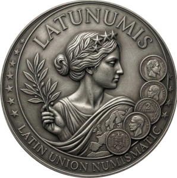
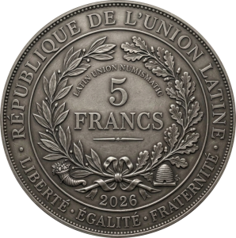
— Dernières acquisitions ajoutées en tête de catalogue —
Une sélection numismatique d'exception. Voyagez à travers les siècles grâce à des modules chargés d'histoire.
Découvrez la boutique sur latunumis.fr
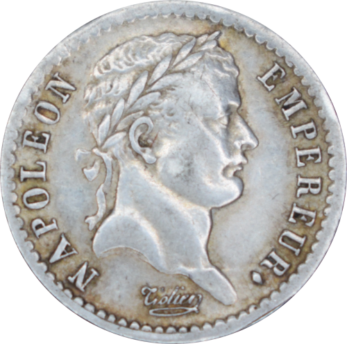
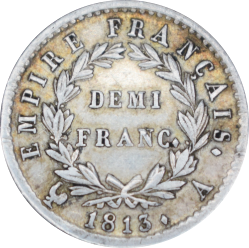
Frappée à Paris en 1813, cette 1/2 Franc en argent se distingue par sa qualité TTB+. Un exemplaire superbe, reflet de l'apogée du système monétaire impérial, indispensable à toute collection napoléonide sérieuse.
Découvrir la pièce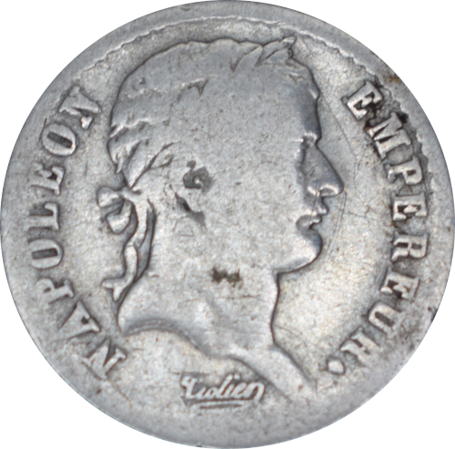
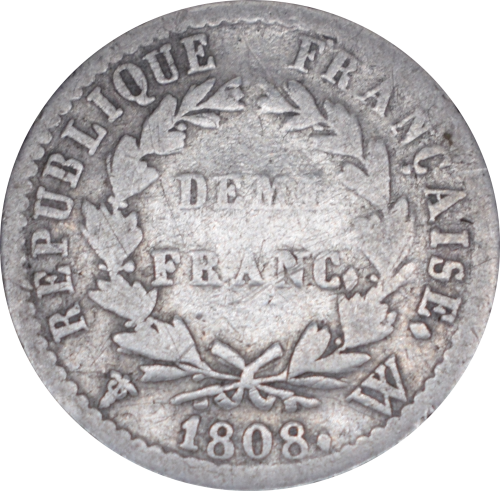
Frappée à Lille en 1808, cette 1/2 Franc est un exemplaire classique de la période de transition napoléonienne. Une pièce chargée d'histoire qui allie l'effigie de l'Empereur à la légende républicaine, idéale pour les passionnés de numismatique française.
Découvrir la pièce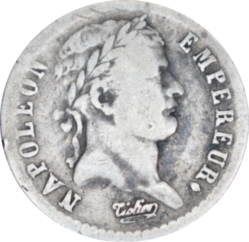
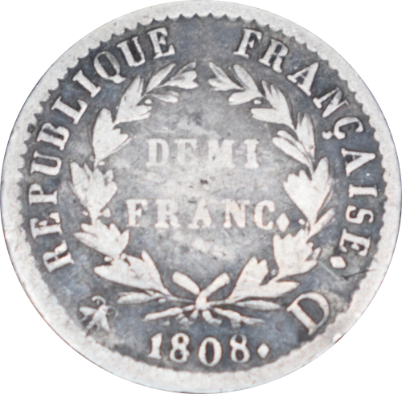
Émise à Lyon en 1808, cette 1/2 franc est un exemple fascinant de monnaie de transition napoléonienne. Son revers portant encore la mention "République Française" en fait une pièce particulièrement recherchée pour son intérêt historique unique.
Découvrir la pièce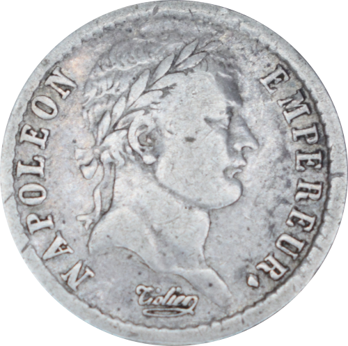
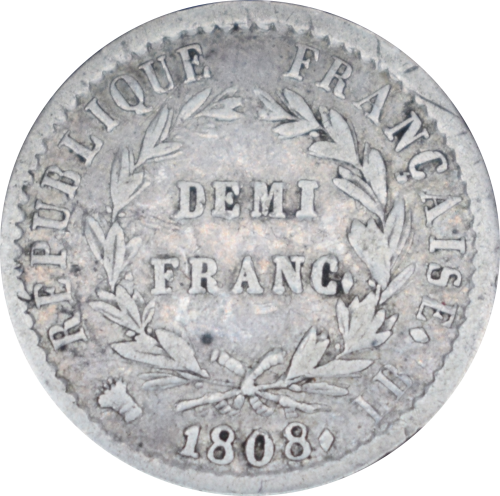
Frappée à Strasbourg en 1808, cette 1/2 franc est un témoin rare de la période de transition entre la République et l'Empire. Son avers impérial contrastant avec le revers républicain en fait une pièce incontournable pour les collectionneurs avertis.
Découvrir la pièce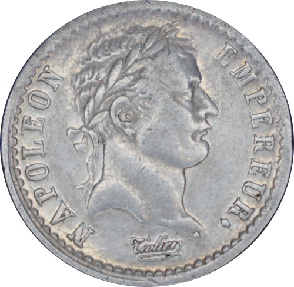
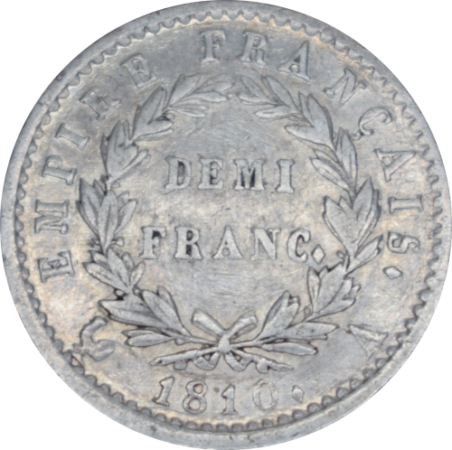
Frappée à Paris en 1810, cette 1/2 franc en argent est un témoin remarquable de l'époque napoléonienne. Présentée ici dans un état SUP, elle ravira les collectionneurs exigeants par la finesse de ses détails et son prestige historique.
Découvrir la pièce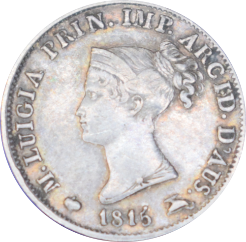
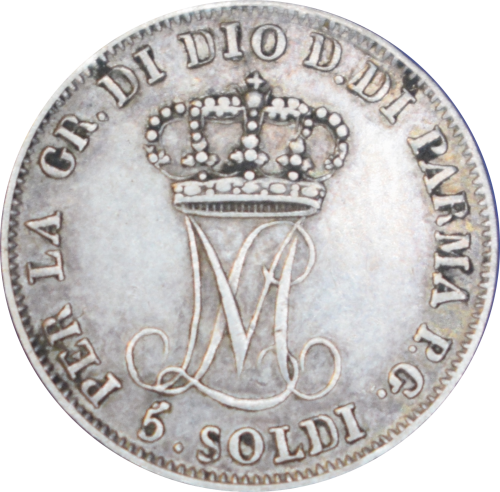
Frappée à Milan peu après la chute de l'Empire, cette monnaie incarne la transition de Marie-Louise d'Autriche vers son duché de Parme. Un exemplaire historique, délicat et incontournable pour les passionnés de Napoléonides.
Découvrir la pièce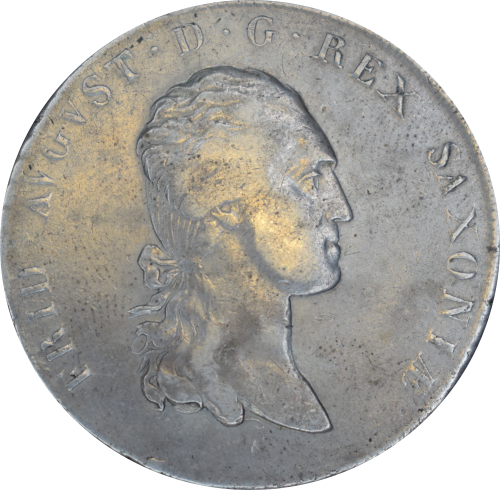
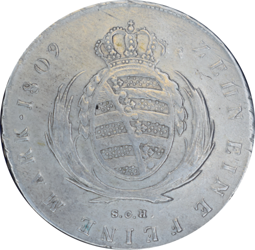
Émis à Dresde en 1809, ce thaler est une "Napoléonide" majeure. Il capture l'esprit d'un royaume de Saxe naviguant dans les turbulences de l'époque napoléonienne. Un exemplaire de prestige, riche en histoire, qui saura séduire les passionnés de numismatique européenne du XIXe siècle.
Découvrir la pièce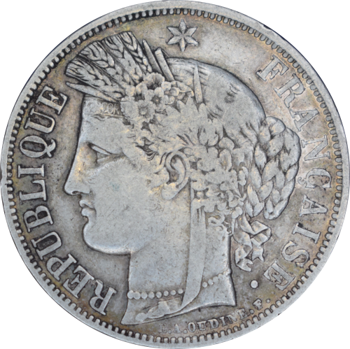
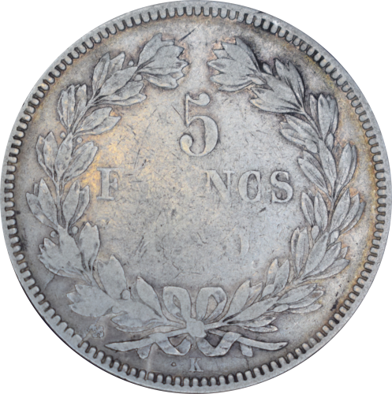
Frappée à l'atelier de Bordeaux (lettre K) en 1850, cette 5 francs Cérès est une pièce emblématique de la Deuxième République. Grâce à son portrait finement ciselé par Oudiné et son histoire liée aux ateliers provinciaux, cet exemplaire ravira les collectionneurs en quête d'une monnaie historique à forte identité républicaine.
Découvrir la pièce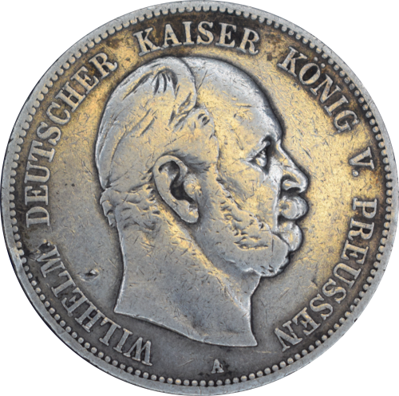
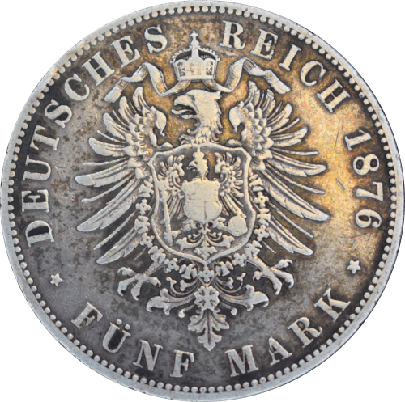
Émise à Berlin (lettre A) en 1876, cette imposante pièce de 5 Mark en argent illustre la puissance du Royaume de Prusse au sein du jeune Empire allemand. Un exemplaire qui, par son poids et sa prestance, capture parfaitement l'esprit de l'époque impériale et ravira les amateurs de numismatique allemande exigeants.
Découvrir la pièce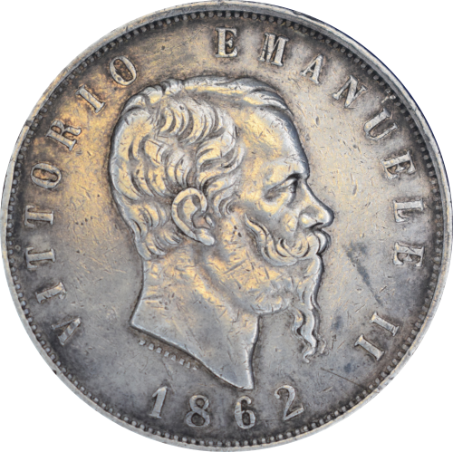
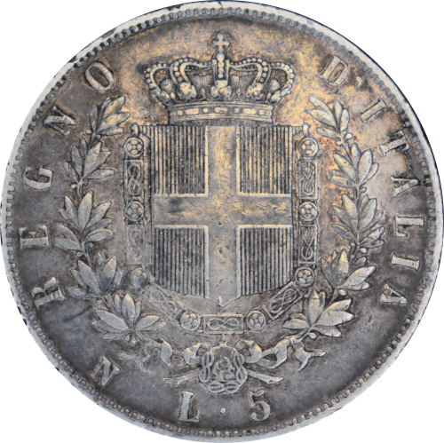
Frappée à l'atelier de Naples en 1862, cette 5 Lires est un témoin rare des premières années du Royaume d'Italie. Avec seulement 141 851 exemplaires produits à cet atelier, elle constitue une pièce maîtresse pour tout collectionneur cherchant à capturer l'essence historique et l'élégance numismatique de l'unification italienne.
Découvrir la pièce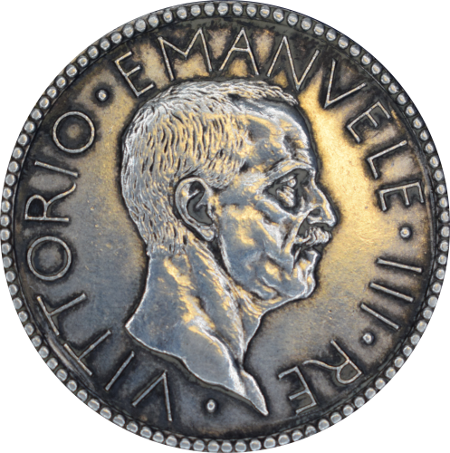
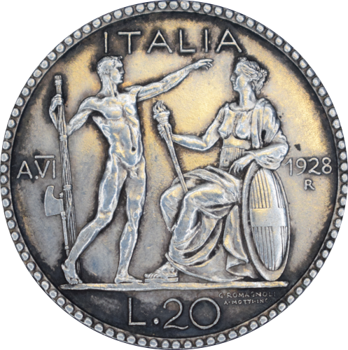
Frappée à l'atelier de Rome (lettre R) en 1928, cette pièce de 20 Lires illustre le style artistique du début du XXe siècle italien. Le portrait de Victor-Emmanuel III sur l'avers et l'allégorie de l'Italie tenant un faisceau sur le revers confèrent à cette monnaie une esthétique singulière. Un exemplaire qui saura séduire les collectionneurs sensibles à la finesse de gravure et à l'histoire numismatique de cette époque.
Découvrir la pièce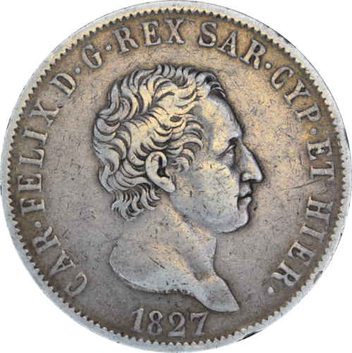
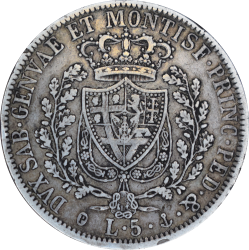
Émise à l'atelier de Gênes (lettre P) en 1827, cette 5 Lires de Charles-Félix de Sardaigne incarne l'élégance des grandes émissions monétaires du Royaume de Sardaigne. Avec son module imposant et son blason complexe, cette pièce captivera tout collectionneur en quête d'une frappe historique authentique et d'une présence remarquable.
Découvrir la pièce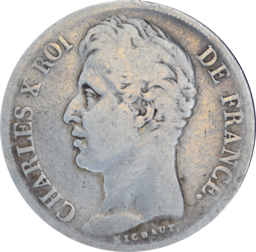
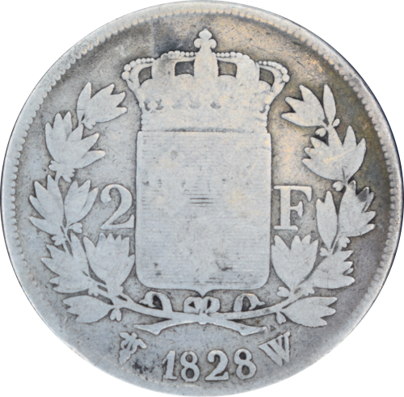
Émise en 1828 à l'atelier de Lille (lettre W), cette 2 Francs Charles X incarne la rigueur et le classicisme des monnaies de la Restauration. Avec un tirage de 357 562 exemplaires, cette pièce est un témoin historique de premier plan. Son portrait royal et son écu couronné en font une pièce de caractère, essentielle pour tout collectionneur passionné par l'histoire monétaire française du début du XIXe siècle.
Découvrir la pièce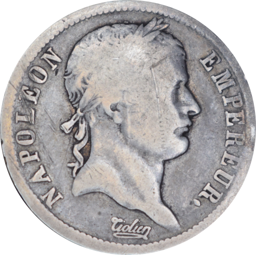
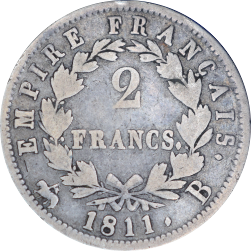
Frappée en 1811 à l'atelier de Rouen (lettre B), cette 2 Francs Napoléon Ier témoigne de l'organisation monétaire sous le Premier Empire. Avec un tirage de 289 734 exemplaires, cette pièce constitue un témoin précieux de la production à l'apogée territoriale du régime. Le portrait lauré de l'Empereur incarne la puissance impériale, faisant de cet exemplaire une pièce historique indispensable.
Découvrir la pièce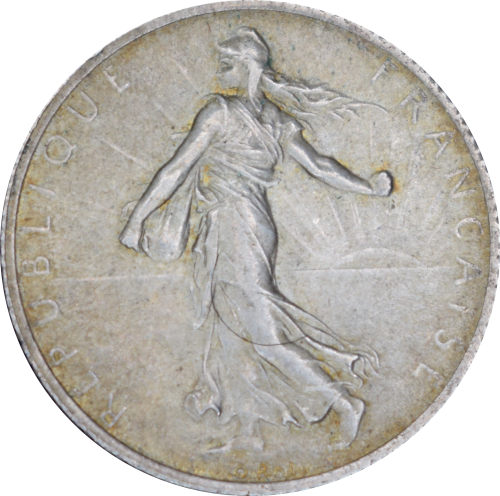
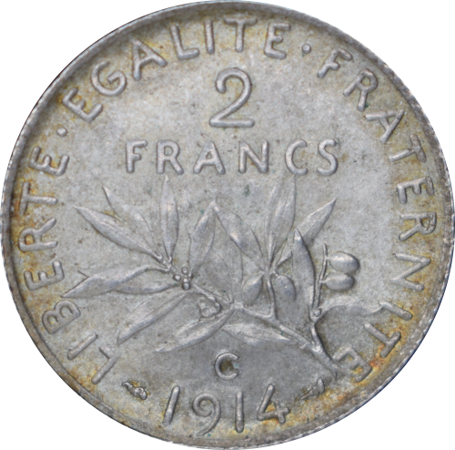
Cette 2 Francs Semeuse, frappée à Castelsarrasin en 1914, capture un moment iconique de la numismatique française. Portée par le graphisme intemporel d'Oscar Roty, elle incarne la stabilité et la fierté républicaine à l'aube du XXe siècle, faisant de ce millésime une pièce recherchée pour sa symbolique et son histoire locale.
Découvrir la pièce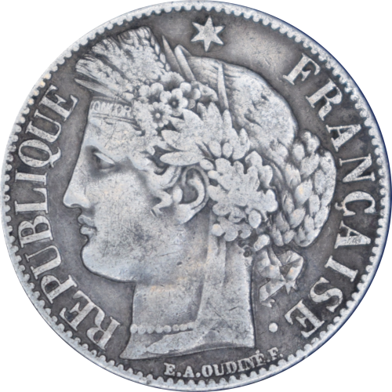
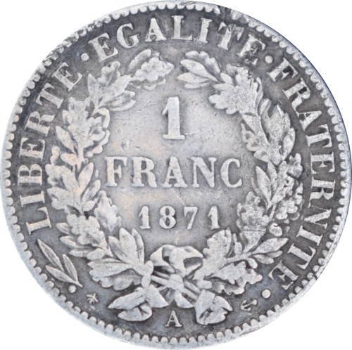
Frappée dans le contexte troublé de 1871, cette 1 Franc Cérès à l'atelier de Paris est un témoin historique majeur de la naissance de la IIIe République. Elle porte en elle les stigmates et les espoirs d'une nation en pleine mutation politique, conservant l'iconographie classique d'Oudiné tout en s'inscrivant dans la nouvelle ère républicaine.
Découvrir la pièce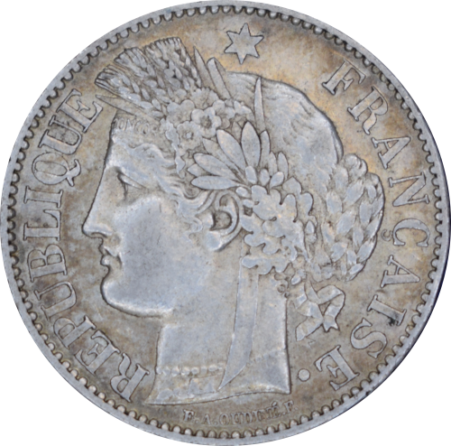
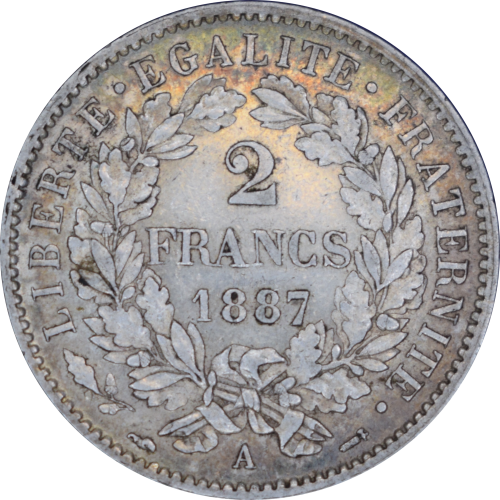
Cette pièce de 2 Francs à l'effigie de Cérès incarne la pérennité des institutions républicaines de la fin du XIXe siècle. Symbole agraire ancestral, Cérès représente ici une France travailleuse et fertile, un choix iconographique fort qui a marqué les premières décennies de la IIIe République. Avec son portrait élégant gravé par Oudiné, cette monnaie est un témoin privilégié des échanges du quotidien sous la IIIe République.
Découvrir la pièce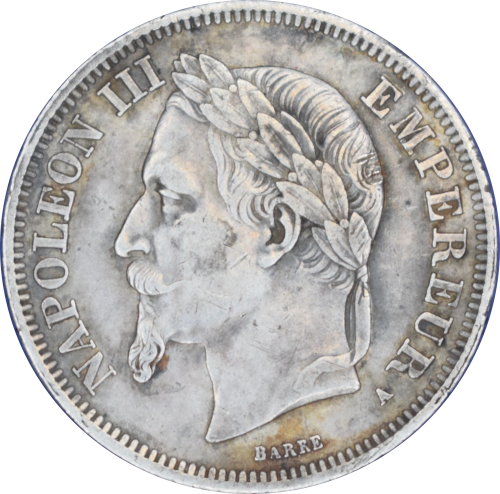
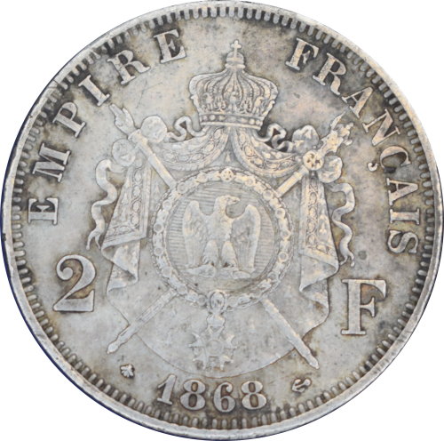
Un superbe exemplaire TTB de 1868 frappé à Paris. Le portrait « lauré » capture toute l'aura de Napoléon III à la fin de son règne. Une pièce indispensable pour illustrer la richesse iconographique du Second Empire.
Découvrir sur Latunumis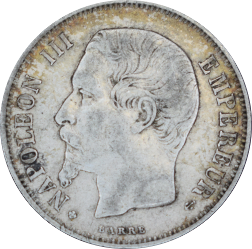
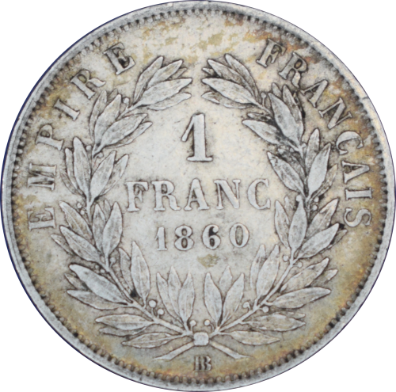
Une frappe alsacienne remarquable de 1860. Le type « tête nue » de Napoléon III incarne parfaitement la période charnière du Second Empire. Un exemplaire TTB+ à l'esthétique soignée, idéal pour les collectionneurs exigeants souhaitant allier rareté régionale et qualité historique.
Découvrir sur Latunumis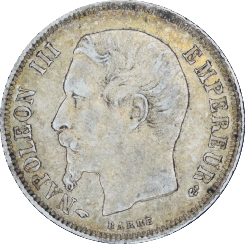
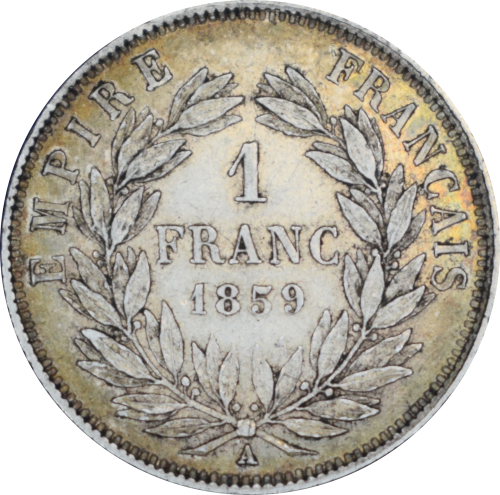
Une magnifique pièce de type « tête nue » frappée à Paris, témoignant de l'élégance monétaire sous Napoléon III.
Découvrir sur Latunumis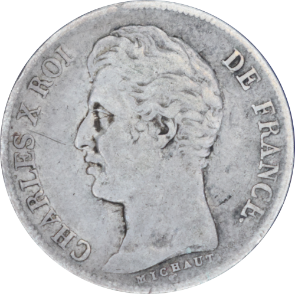
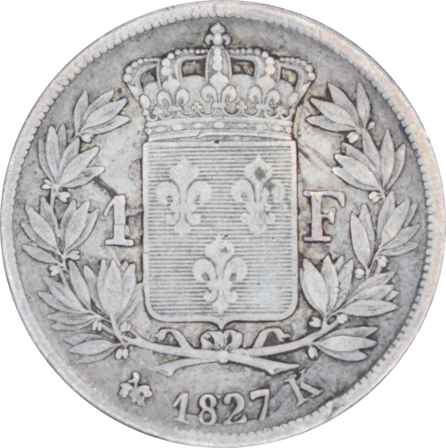
Frappée à Bordeaux avec un tirage extrêmement restreint, cette pièce est un témoin majeur de la numismatique sous Charles X.
Découvrir sur Latunumis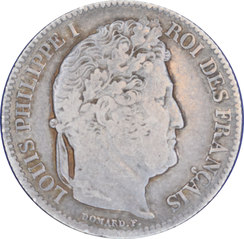
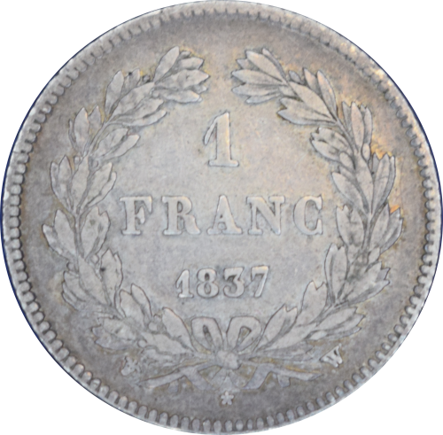
Frappée à l'atelier de Lille, cette monnaie de 1 Franc de 1837 est une pièce rare issue de la Monarchie de Juillet, avec un tirage de seulement 265 815 exemplaires.
Un bel exemplaire en état TTB qui ravira les passionnés d'histoire monétaire française.
Découvrir sur Latunumis (130€)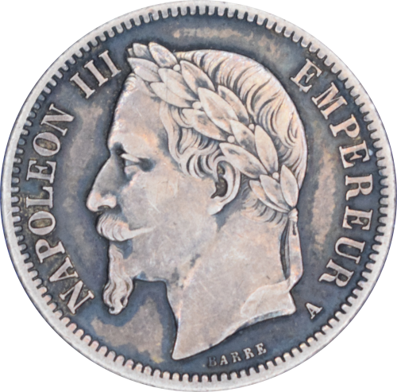
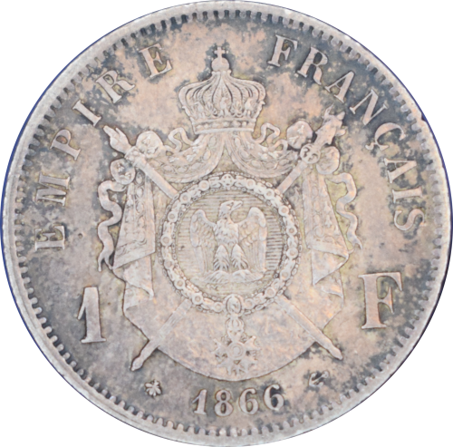
Le 1 Franc Napoléon III est une pièce charnière de la numismatique française du XIXe siècle. Cet exemplaire, frappé à Paris en 1866, est proposé dans un état de conservation remarquable (SUP).
Sa qualité de frappe et sa conservation exceptionnelle en font un exemplaire de premier choix pour les collectionneurs exigeants.
Découvrir sur Latunumis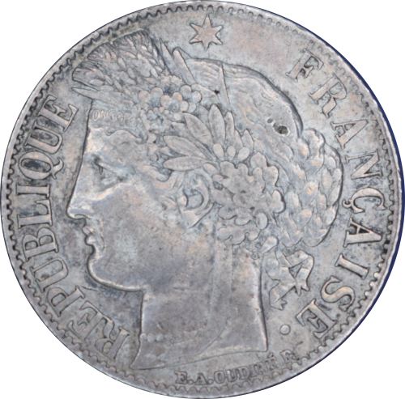
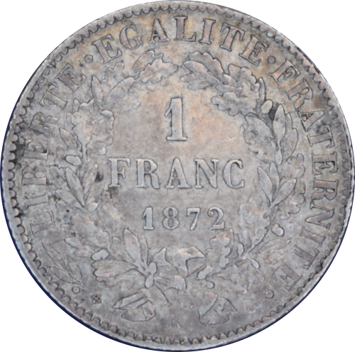
Le type Cérès incarne la République française avec élégance. Cet exemplaire, frappé à Bordeaux, est un incontournable pour les amateurs de monnaies du XIXe siècle.
Son métal précieux et son design intemporel en font une pièce de collection historique au charme indéniable.
Découvrir sur LatunumisCélébrez l'héritage de Frédéric Chopin avec cette pièce de 50 Zlotys frappée en 1972. Son tirage restreint à 49 999 exemplaires en fait une pièce de choix pour les collectionneurs exigeants.
La qualité de frappe Belle Épreuve met en lumière la finesse du portrait de ce génie du piano, véritable emblème culturel de la Pologne.
Découvrir sur LatunumisCette pièce de 100 Zlotys célèbre Nicolas Copernic, l'astronome polonais dont les travaux ont révolutionné notre compréhension de l'univers.
Frappée en qualité Belle Épreuve, elle offre une esthétique épurée et moderne qui souligne toute la grandeur historique de ce savant visionnaire.
Découvrir sur LatunumisLe Vytis, figure centrale de cette pièce de 1925, est l'emblème national historique de la Lituanie. Représenté ici avec force, il incarne l'indépendance de la nation.
Avec son métal précieux et son design classique, cet exemplaire TTB est une pièce maîtresse pour tout collectionneur attiré par l'histoire numismatique des États baltes.
Découvrir sur LatunumisFrappée en 1866, durant la 21ème année de pontificat de Pie IX, cette pièce de 1 Lira incarne la riche tradition monétaire du Vatican.
Avec son effigie solennelle et son état de conservation TTB+, elle constitue un ajout de choix pour tout collectionneur passionné par les États pontificaux.
Découvrir sur LatunumisCette monnaie commémorative de 1930 célèbre les 100 ans de la Constitution de l'Uruguay. Son design, frappé à l'atelier de Paris, témoigne d'une grande finesse artistique.
Avec son revers illustrant la générosité de la terre via ses épis de blé, elle constitue un exemplaire historique fascinant pour tout collectionneur de monnaies sud-américaines.
Découvrir sur LatunumisCette pièce de 5 Francs en argent de 1966 honore le Prince Rainier III, figure centrale de l'histoire moderne de Monaco.
Avec ses armoiries détaillées et sa gravure soignée, cet exemplaire en état SUP incarne le prestige monégasque. Une pièce de choix pour tout amateur de monnaies princières.
Découvrir sur LatunumisFrappée pour célébrer le centenaire de l'Unification de l'Italie (1861-1961), cette pièce est une véritable œuvre d'art numismatique.
Son design dynamique représentant un quadrige en mouvement en fait une pièce particulièrement recherchée. Un bel exemplaire en état TTB+ pour enrichir votre série italienne.
Découvrir sur LatunumisCette pièce de 500 Lires en argent de 1958 est un symbole de la numismatique italienne moderne.
Avec son design élégant mettant en scène les navires de Christophe Colomb, elle demeure une pièce essentielle dans toute collection. Cet exemplaire en état TTB+ est une excellente opportunité d'acquérir ce grand classique.
Découvrir sur LatunumisCette pièce de 30 Drachmes en argent de 1964 célèbre l'union historique du Roi Constantin II et de la Reine Anne-Marie.
Avec un tirage d'un million d'exemplaires, elle est un témoin majeur de l'histoire monarchique grecque du XXe siècle. Sa qualité SUP+ et son iconographie frappante en font une pièce remarquable pour tout collectionneur.
Découvrir sur LatunumisCette pièce de 500 Lires en argent de 1965 célèbre Dante Alighieri, le père de la langue italienne.
D'une grande élégance, cette monnaie en état SUP captive par la qualité de son portrait et la symbolique de son revers. Un exemplaire incontournable pour les amateurs de culture et d'histoire italienne.
Découvrir sur LatunumisCe Vereinsthaler de 1867, frappé sous le règne de Wilhelm I à l'atelier de Berlin, est une pièce emblématique du système monétaire allemand du XIXe siècle.
D'une grande élégance avec son portrait royal classique et ses armoiries détaillées, cet exemplaire en état TTB+ ravira les amateurs de monnaies germaniques.
Découvrir sur LatunumisCette pièce de 10 Zlotys en argent, frappée en 1936, honore la mémoire du maréchal Jozef Pilsudski, père de l'indépendance polonaise.
Présentée ici en état SUP, elle se distingue par une finesse de gravure exceptionnelle, faisant de cet exemplaire une pièce incontournable pour les collectionneurs de monnaies du XXe siècle.
Découvrir sur LatunumisCette pièce de 5 Lires en argent, frappée à l'atelier de Gênes en 1847, est un témoin remarquable du règne de Carlo Alberto.
Avec un tirage limité à 141 839 exemplaires et une iconographie royale classique, cette monnaie est une pièce maîtresse pour tout collectionneur passionné par l'histoire italienne du XIXe siècle.
Découvrir sur LatunumisCette pièce de 5 Francs en argent, frappée en 1850 à Paris, est une figure centrale de la numismatique de la Deuxième République française.
Avec son iconographie portée sur l'agriculture et la liberté, cet exemplaire en état TTB est une pièce de choix pour tout collectionneur cherchant à illustrer cette période charnière de l'histoire de France.
Découvrir sur LatunumisFrappée pour la deuxième année du pontificat de Jean-Paul II, cette pièce en argent de 11,04g est un exemplaire prisé pour sa valeur historique et numismatique.
Avec un tirage limité de 156 000 exemplaires et présentée ici en état TTB, elle constitue un ajout remarquable à toute collection dédiée aux souverains pontifes.
Découvrir sur LatunumisÉmise pour le 250ème anniversaire de la naissance de George Washington, cette pièce en argent de 12,5g est un hommage numismatique majeur à l'histoire des États-Unis.
Présentée ici dans un état Splendide (SPL), elle ravira les amateurs de monnaies américaines par la finesse des détails de Mount Vernon au revers.
Découvrir sur LatunumisCette pièce de 20 centimes en argent, frappée à l'atelier de Paris, est une pièce emblématique du paysage monétaire colonial français.
Dotée d'un état de conservation TB, elle présente la figure assise de la République tenant un faisceau de licteur, offrant un témoignage historique remarquable de cette période.
Découvrir sur LatunumisFrappée à l'atelier de Paris en 1810, cette pièce de 5 Francs en argent est une référence incontournable pour tout collectionneur napoléonien.
Portant le portrait lauré de l'Empereur, cet exemplaire de qualité TTB affiche une belle présence historique, témoin de la puissance monétaire déployée sous le règne de Napoléon Ier.
Découvrir sur LatunumisFrappée en 1830 à l'atelier de Gênes (lettre P), cette monnaie en argent de 24,83 g témoigne du prestige monétaire du Royaume de Sardaigne avant l'unification italienne.
L’avers arbore le portrait magistral du roi Charles-Félix, tandis que le revers révèle les armoiries couronnées entourées de branches de chêne, symbolisant la pérennité de la dynastie. Un exemplaire de caractère pour tout numismate sensible à l'histoire italienne.
Découvrir sur LatunumisRare témoignage de la vie associative de la Monnaie de Paris, cette médaille célèbre la première édition du Raid Aquitain en mai 1997.
Le design dynamique met en avant les disciplines du raid (course, cyclisme, canoë) entremêlées à des symboles régionaux comme la grappe de raisin. Un objet de collection atypique, frappé à Pessac, présenté dans son superbe écrin de velours bleu d'origine.
Découvrir sur LatunumisCélébrez le centenaire de la naissance de Roland Garros avec cette somptueuse pièce de 10 Francs en Argent de qualité Belle Épreuve (BE), limitée à seulement 10 000 exemplaires mondiaux.
Frappée dans un alliage de très haute pureté en Argent 950‰, cette œuvre d'art monétaire signée Hugues Duetthe présente un relief mat chirurgical se détachant sur un fond poli au miroir parfait. L'exemplaire est livré protégé dans sa capsule, inséré dans son écrin officiel numéroté.
Découvrir sur LatunumisCélébrez les racines de l'Union Européenne avec cette rare émission de 10 Francs en Argent, frappée en 1986 pour honorer Robert Schuman, l'un des pères fondateurs de l'Europe unie.
Émise en qualité Brillant Universel (BU) à seulement 20 000 exemplaires, cette monnaie de 7g en Argent 900‰ se distingue par son graphisme novateur et asymétrique. Cet exemplaire de collectionneur a précieusement conservé son livret-écrin d'origine numéroté d'époque.
Découvrir sur LatunumisÉmise en 1985 par la Monnaie de Paris, cette pièce commémorative en Argent massif célèbre le centenaire de la publication de "Germinal", le chef-d’œuvre absolu d'Émile Zola.
L'avers dévoile un magnifique portrait de profil de l’écrivain engagé, tandis que le revers propose une gravure industrielle saisissante dépeignant l’univers des mines de charbon du XIXe siècle. Un exemplaire superbe magnifié par un début de patine naturelle.
Découvrir sur LatunumisCette coupure historique de 100 Francs en Argent célèbre le cinquantenaire de la disparition de Marie Curie, première femme à recevoir le Prix Nobel et figure légendaire de la recherche scientifique mondiale.
Créée par le célèbre graveur Raymond Corbin, l'avers dévoile un magnifique portrait de profil de la scientifique. Le revers met à l'honneur ses deux disciplines de prédilection, la physique et la chimie, entrelacées dans une couronne de palmes hautement symbolique.
Découvrir sur LatunumisCélébrez l'histoire monétaire française avec cette magnifique coupure de 5 Francs en Argent millésimée 2001, année ultime avant l'introduction de l'Euro. Frappée en tirage limité à 25 000 exemplaires, cette pièce est proposée dans un état Brillant Universel impeccable.
Conçue en argent 900‰ (12 g), elle revisite le célèbre type de la Semeuse d'Oscar Roty. Cet exemplaire d'une grande pureté visuelle est précieusement conservé sous sa capsule d'origine protectrice et livré avec son certificat d'authenticité officiel de la Monnaie de Paris.
Découvrir sur LatunumisDécouvrez cette prestigieuse émission de 100 Francs Argent en qualité Belle Épreuve, limitée à seulement 18 000 exemplaires. Cet exemplaire d'une fraîcheur exceptionnelle est accompagné de son certificat officiel d'authenticité numéroté d'origine.
Frappée en argent pur à 999‰, elle présente un contraste saisissant caractéristique des frappes de prestige, avec des reliefs mats d'une précision chirurgicale se détachant sur un fond poli au miroir parfait.
Découvrir sur LatunumisFrappé à 500 000 exemplaires à l'atelier de Philadelphie, ce rare écu de 5 Bolivars de 1924 reprend au milligramme près les standards des pièces de 5 Francs en argent.
Présentant une très belle patine grise de circulation sur un flan sain de 24,63g (qualité TB+/TTB), cette monnaie met à l'honneur le célèbre profil d'Albert Désiré Barre représentant El Libertador.
Découvrir sur LatunumisFrappé à seulement 180 025 exemplaires à l'atelier de Saint-Pétersbourg, ce rare 5 Kopecks de 1867 marque l'introduction du nouveau système monétaire d'Alexandre II.
Cet exemplaire en qualité TTB conserve des détails héraldiques très nets sur l'aigle bicéphale impériale. Une pièce de haute valeur historique en argent massif de 0,92g, habillée d'une patine grise authentique.
Découvrir sur LatunumisFrappée à seulement 78 870 exemplaires à l'atelier de Gênes, cette rare monnaie du Royaume de Sardaigne incarne le fondement technique du futur système monétaire européen.
Cet exemplaire en qualité TTB met en lumière le portrait de Charles-Félix de Savoie. Une pièce d'une grande finesse en argent massif de 2,45g, sublimée par une magnifique patine de collection aux reflets irisés.
Découvrir sur LatunumisFrappé à seulement 244 562 exemplaires à la Monnaie de Paris, ce rare demi-rouble de 1896 porte sur sa tranche l'étoile secrète (★), symbole de l'aide technique française apportée au Tsar Nicolas II.
Cet exemplaire en qualité TB+ en argent physique de 9,82g affiche un très beau portrait du souverain impérial, rehaussé par une patine grise authentique et profonde.
Découvrir sur LatunumisFrappé à 800 000 exemplaires à l'atelier de Philadelphie, ce rare millésime 1903 incarne l'adoption du standard de l'Union Latine par la jeune république vénézuélienne.
Cet exemplaire en qualité TTB met à l'honneur l'effigie de Simón Bolívar gravée par Albert Barre. Une pièce en argent massif de 4,95g arborant une splendide patine de sédimentation sombre.
Découvrir sur LatunumisFrappée à 1 million d'exemplaires seulement, cette pièce de 2 Dinars de 1897 illustre l'intégration économique du Royaume de Serbie aux standards monétaires européens de l'époque.
Cet exemplaire en qualité TTB présente un portrait vigoureux d'Alexandre Ier gravé par Anton Scharff. Une magnifique monnaie en argent massif de 9,94 g offrant une patine de sédimentation authentique.
Découvrir sur LatunumisFrappée à Mexico en 1809 sous Ferdinand VII, cette légendaire pièce en argent de 8 Reales a traversé les océans pour servir aux échanges commerciaux en Extrême-Orient.
Sélectionné pour son caractère unique, cet exemplaire présente de magnifiques chopmarks (poinçons de changeurs chinois d'époque) frappés directement sur le buste et l'écu. Une monnaie historique d'un poids de 26,58 g (pour un poids théorique de 27,02 g).
Découvrir sur LatunumisFrappée en 1813 à l'atelier de Kremnica (K-B), cette pièce en argent de 2 Korona illustre la finesse du monnayage hongrois sous la double monarchie.
Sélectionné en qualité TTB+, cet exemplaire se distingue par son revers magistral mettant en scène deux anges soutenant la mythique couronne de Saint-Étienne. Une monnaie saine au poids solide de 10,02 g.
Découvrir sur LatunumisÉmise sous le protectorat en 1911 (Hégire 1329) au nom de Muhammad al-Nasir Bey, cette pièce bilingue respecte scrupuleusement les critères de poids et de métal de l'Union Latine.
Sélectionné en qualité TTB+ pour la netteté de ses arabesques et de ses légendes, cet exemplaire affiche un poids parfait de 10,00 g. Une monnaie coloniale saine et très recherchée au tirage modéré.
Découvrir sur LatunumisFrappée à l'atelier de Marseille (MA) en 1829, cette 5 Francs en argent massif arbore fièrement au revers le palmier, différent monétaire du directeur Joseph-Auguste Ricard.
Sélectionné en qualité TTB pour la netteté de ses reliefs héraldiques, cet exemplaire conserve un excellent poids de 24,91 g. Une monnaie saine et pleine d'histoire, restée dans sa patine brute de circulation.
Découvrir sur LatunumisFrappée à Paris (A) en 1830, cette 5 Francs en argent massif du 2ème Type est un témoin direct des derniers mois du règne de Charles X, interrompu par la Révolution des Trois Glorieuses.
Sélectionné en qualité TTB pour la vigueur de sa gravure, cet exemplaire surprend par son excellent poids de 24,90 g. Une monnaie saine et authentique, conservée dans sa patine historique d'époque.
Découvrir sur LatunumisFrappée à Lyon (D) en 1829, cette 5 Francs en argent introduit le second type monétaire du règne au titre de 900‰. Elle arbore fièrement le navire, différent du directeur Nicolas Richard.
Conservé dans un état TTB remarquable pour ses reliefs, cet exemplaire stupéfie par son poids de 24,98 g, frôlant la perfection d'une pièce neuve de l'époque. Une opportunité idéale avec sa patine d'origine non nettoyée.
Découvrir sur LatunumisFrappée à Lille (W) en 1825, cette 5 Francs en argent massif coïncide avec l'année historique du sacre du Roi à Reims. Elle porte le caducée, différent monétaire emblématique du Nord.
Proposé en qualité TB+ / TTB-, cet exemplaire affiche un profil de caractère malgré d'authentiques marques de circulation. Son poids solide de 24,79 g et la netteté de son revers héraldique en font une pièce provinciale très recherchée.
Découvrir sur LatunumisFrappée à Lyon (D) en 1826, cette 5 Francs en argent massif met en lumière l'excellence de la frappe lyonnaise sous la Restauration. Elle arbore fièrement le symbole du navire, marque du directeur de l'atelier.
Sélectionné en qualité TTB, cet exemplaire se distingue par la remarquable fraîcheur de ses reliefs. La chevelure du Roi et les détails héraldiques du revers sont d'une netteté exemplaire, le tout sublimé par un poids remarquable de 24,89 g.
Découvrir sur LatunumisFrappée à Paris (A) en 1826, cette 5 Francs en argent incarne la production majeure de la Restauration. Produite au sein du prestigieux Hôtel des Monnaies de la capitale, elle fut la coupure maîtresse des échanges quotidiens de l'époque.
Proposé en qualité TB+ / TTB-, cet exemplaire affiche une usure de circulation très saine et homogène. Son revers héraldique se distingue par des reliefs encore vigoureux sur l'écu couronné et sa couronne sommitale.
Découvrir sur LatunumisFrappée à Bayonne (L) en 1826, au début du règne de Charles X, cette 5 Francs en argent massif témoigne de l'activité des ateliers monétaires provinciaux sous la Restauration.
Cet exemplaire en qualité TB+ / TTB- arbore une patine de circulation grise et noble. Son revers héraldique est particulièrement bien conservé, révélant la finesse de la gravure de l'écu couronné aux trois lys, sans aucun choc majeur.
Découvrir sur LatunumisFrappée sous le règne d'Alphonse XII en 1882, cette pièce de 2 Pesetas respecte scrupuleusement les standards de poids et de titre en argent de l'Union Latine européenne.
Cet exemplaire en qualité TB+ affiche une usure de circulation des plus saines et homogènes. Son revers héraldique présente l'écu couronné entouré des célèbres Colonnes d'Hercule, le tout baigné dans une belle patine grise naturelle de médaillier.
Découvrir sur LatunumisFrappée en 1917, cette pièce en argent de 50 Centesimos immortalise le général José Artigas, père de la patrie uruguayenne, et porte la célèbre devise de liberté du pays.
Cet exemplaire en qualité TB/TTB arbore une patine de circulation authentique. Le revers met en valeur l'écu national couronné par le Soleil de Mai, révélant ses quatre symboles traditionnels de justice, de liberté, de force et d'abondance.
Découvrir sur LatunumisFrappée en 1924, cette pièce de 2 1/2 Shillings est l'une des premières émissions majeures de l'Union sud-africaine, combinant magnifiquement les légendes en anglais et en afrikaans.
Cet exemplaire en qualité TTB se distingue par un revers superbement conservé. L'écu héraldique couronné révèle de magnifiques détails sur le chariot des pionniers, l'oranger et les animaux emblématiques, le tout enrobé d'une patine grise de circulation très noble.
Découvrir sur LatunumisFrappé à Berlin en 1866, année historique de la bataille de Sadowa, ce Vereinsthaler en argent symbolise la montée en puissance du royaume de Prusse sous Guillaume Ier.
Cet exemplaire en qualité SUP se distingue par la finesse des détails du portrait royal et les reliefs intacts de l'aigle héraldique au revers. Les contours de la monnaie révèlent une superbe patine de collection d'une grande authenticité.
Découvrir sur LatunumisFrappé à l'occasion de la Fête Fédérale de Tir à Schaffhouse en 1865, cet écu d'argent à 900‰ est une pièce historique hautement recherchée, émise à seulement 10 000 exemplaires.
Cet exemplaire en qualité SUP impressionne par la fraîcheur et la netteté de ses reliefs. La gravure monumentale signée Antoine Bovy met en scène Helvetia remettant une couronne de laurier devant la silhouette de la forteresse du Munot, préservant toute sa puissance visuelle d'origine.
Découvrir sur LatunumisFrappée sous le graveur général Albert-Désiré Barre, cette pièce de 1 Franc en argent incarne la stabilité économique de la France à la fin des années 1850.
Cet exemplaire en qualité TTB affiche des reliefs très sains sur le portrait de l'Empereur et la couronne de laurier. Pesant 4,97 g, elle séduit immédiatement par sa patine d'armoire authentique, aux reflets dorés et irisés particulièrement prononcés sur les listels.
Découvrir sur LatunumisCréé en hommage au président assassiné, le demi-dollar Kennedy de 1964 revêt une importance historique unique : il s'agit du tout premier millésime de la série et du seul frappé à 90% d'argent pur.
Cet exemplaire en qualité TTB+ a été produit à l'atelier de Denver (D). Pesant 12,57 g, la monnaie a conservé de très beaux reliefs sur la chevelure de JFK et sur les détails du grand sceau présidentiel au revers, rehaussés par une élégante patine grise de collection.
Découvrir sur LatunumisDessiné par George T. Morgan, ce dollar en argent est l'un des symboles les plus puissants de l'histoire américaine. L'année 1921 marque l'ultime frappe de ce modèle légendaire.
Cet exemplaire en état SUP affiche une fraîcheur de relief remarquable. Pesant 26,81 g d'argent, la pièce révèle de magnifiques détails sur le profil de Liberty et les plumes de l'aigle, le tout préservé dans son éclat d'origine.
Découvrir sur LatunumisFrappée au cœur des années de prospérité du Second Empire, cette pièce de 5 Francs présente le premier portrait officiel de Napoléon III, dit « tête nue », magnifiquement exécuté par le graveur Désiré-Albert Bouvet.
Cet exemplaire se présente dans un état de conservation SUP exceptionnel. Pesant ses 25,00 g d'argent d'origine, la monnaie a traversé le temps sans usure notable, conservant des détails parfaits sur la chevelure et sur les armoiries impériales, le tout rehaussé d'une splendide patine dorée de collection.
Découvrir sur LatunumisFrappée à Turin sous le règne de Charles-Félix (Carlo Felice), cette monnaie sarde témoigne de la haute qualité de frappe de l'atelier du Piémont au début du XIXe siècle.
Cet exemplaire en état TTB se distingue par une fantastique patine périphérique aux reflets irisés (bleus et dorés). Pesant 4,81 g d'argent, elle offre un revers héraldique particulièrement soigné avec les armes de la maison de Savoie entourées du collier de l'Annonciade.
Découvrir sur LatunumisFrappé durant la dernière année de la Première Guerre mondiale, ce Florin (ou pièce de 2 Shillings) arbore le portrait classique de George V gravé par Bertram MacKennal.
Cet exemplaire se présente dans un état de conservation SUP magnifique. Pesant 11,31 g d'argent, la pièce est magnifiée par une patine d'armoire dense et authentique, qui donne un relief saisissant aux écus d'Angleterre, d'Écosse et de la harpe d'Irlande disposés en croix.
Découvrir sur LatunumisFrappée à l'époque des accords du Latran sous le pontificat de Pie XI, cette monnaie en argent incarne l'indépendance retrouvée de la Cité du Vatican. Le travail d'orfèvre du graveur Aurelio Mistruzzi est ici saisissant.
Cet exemplaire en état SUP conserve une fraîcheur remarquable. Pesant 9,97 g d'argent, la pièce arbore une superbe patine dorée. Un tirage confidentiel de seulement 50 000 exemplaires, ce qui en fait une pièce particulièrement difficile à dénicher.
Découvrir sur LatunumisCréé à l'origine par Augustin Dupré sous la Révolution, le type Hercule est réutilisé au début de la Troisième République comme symbole de force et d'union nationale.
Cet exemplaire frappé à Paris (A) se présente dans un état de conservation SUP exceptionnel. Pesant 25,04 g d'argent massif, il arbore de magnifiques reflets de patine naturelle qui soulignent la finesse originelle de la gravure.
Découvrir sur LatunumisCette monnaie d'envergure, frappée en 1853, est un pilier de la numismatique européenne. Elle arbore le portrait de Léopold Ier, premier Roi des Belges, gravé par l'artiste L. Wiener.
Un exemplaire en état TTB+ affichant une superbe patine de collection. Avec un poids imposant de 24,96 g d'argent pur et son revers héraldique au lion, c'est une pièce de prestige pour tout amateur de grands modules.
Découvrir sur LatunumisFrappée sous le règne de Nikola Ier, cette monnaie en argent est un vestige historique du Royaume du Monténégro juste avant la Grande Guerre. Elle arbore l'aigle bicéphale, symbole de la tradition byzantine.
Cet exemplaire en état TTB+ affiche des détails remarquables sur la couronne et les armoiries. Avec un tirage limité à seulement 500 000 exemplaires et un poids de 4,96 g, c'est une pièce de choix pour tout collectionneur de monnaies du monde.
Découvrir sur LatunumisCette monnaie commémorative célèbre le 20e anniversaire des Légions Polonaises. Elle arbore le portrait du Maréchal Józef Piłsudski, figure centrale de l'indépendance de la Pologne.
Un exemplaire rare (tirage 300 000 ex.) en état TTB+/SUP. Avec un poids de 11,01 g et une patine d'origine, c'est une pièce majeure de la numismatique polonaise de l'entre-deux-guerres.
Découvrir sur LatunumisCette monnaie de la République Socialiste Fédérative Soviétique de Russie (RSFSR) est un témoin rare des premières années de la Révolution. Elle arbore fièrement la faucille et le marteau, entourés de la célèbre devise prolétarienne.
Un exemplaire en état TTB+ affichant un poids parfait de 10,00g. Le revers à l'étoile à cinq branches est resté très net, faisant de cette pièce un incontournable pour les collectionneurs de numismatique russe et politique.
Découvrir sur LatunumisFrappée au début du règne d'Alphonse XII, cette pièce de 5 Pesetas respecte les standards de l'Union Latine. Elle représente le jeune souverain de profil, un symbole de la Restauration bourbonienne en Espagne.
Cet exemplaire en état TTB affiche un poids de 24,87g. Une monnaie d'argent historique, appréciée pour la finesse de ses gravures sur le revers aux armes royales entourées des colonnes d'Hercule.
Découvrir sur LatunumisFrappée sous le règne de l'Empereur Guangxu, cette monnaie en argent est un témoignage rare de la fin de la période impériale chinoise. Elle présente le célèbre dragon entouré de nuages et de caractères mandchous.
Un exemplaire en état TTB- (référence Y182.2) possédant une patine naturelle. Sa rareté et son iconographie en font une pièce centrale pour tout collectionneur de numismatique asiatique ou mondiale.
Découvrir sur LatunumisFrappée pour commémorer le 10e anniversaire de la victoire de 1918, cette monnaie présente le Roi Victor-Emmanuel III en uniforme militaire avec le célèbre casque d'acier (Elmetto).
Le revers arbore un lion rugissant et la célèbre devise : "Meglio vivere un giorno da leone que cento anni da pecora". Un exemplaire en état TTB, affichant un poids de 20,02g, indispensable pour une collection de monnaies du XXe siècle.
Découvrir sur LatunumisFrappée à l'atelier de Paris (A), cette pièce de 5 Francs en argent est l'un des piliers du système monétaire impérial. Elle arbore le buste lauré de l'Empereur, symbole de sa puissance après les grandes victoires.
Cet exemplaire se distingue par un état de conservation TTB+ remarquable, affichant un poids de 24,94g. Une monnaie dense et chargée d'histoire, indispensable pour tout cabinet numismatique sérieux.
Découvrir sur LatunumisFrappée dans l'urgence lors du blocus d'Anvers par les coalisés, cette monnaie de siège témoigne des derniers instants de l'épopée impériale. Son aspect brut raconte l'histoire d'une ville sous pression militaire.
Cet exemplaire en état TB+ présente la rare variante V sous l'N (F115B/2). Avec un tirage infime de seulement 4 296 exemplaires, elle constitue une véritable curiosité historique et technique.
Découvrir sur LatunumisCe millésime 1936 se présente sous un module dense de 29 mm, frappé dans un argent noble à 900‰. Il incarne l'équilibre parfait entre l'esthétique coloniale et la rigueur monétaire de la IIIe République.
Un exemplaire en état TTB+, se distinguant par ses reliefs vigoureux et une patine naturelle qui met en valeur la puissance du dessin de Jean-Auguste Barre.
Découvrir sur LatunumisCette pièce emblématique de 1870 illustre la transition politique de l'Espagne vers les standards de l'Union Latine. Son design allégorique est l'un des plus appréciés des collectionneurs européens.
Exemplaire en état TTB, offrant des reliefs élégants et une patine grise d'époque qui met en valeur la finesse de la gravure de Marchionni.
Découvrir sur LatunumisAvec seulement 450 938 exemplaires sortis des presses, la Semeuse de 1900 est l'une des pièces les plus convoitées de la série. Elle marque le passage au nouveau siècle avec une élégance rare.
Cet exemplaire en état TTB se distingue par la finesse de ses reliefs et sa patine authentique, offrant un témoignage précieux de la numismatique française.
Découvrir sur LatunumisCe "Quarter" en argent de 1902 a été frappé à La Nouvelle-Orléans, l'un des ateliers les plus iconiques de l'histoire américaine. Le design de Charles Barber incarne la robustesse et l'idéalisme de l'Amérique de la Belle Époque.
Exemplaire affichant une belle patine grise naturelle, avec des détails encore bien présents sur l'aigle héraldique du revers.
Découvrir sur LatunumisCe module de 2 Francs en argent illustre la puissance de la France impériale en 1867. Frappée à Bordeaux, elle arbore le portrait lauré, symbole d'un règne glorieux et d'une monnaie qui dominait l'Europe.
Exemplaire en état TTB, remarquable pour la finesse de sa gravure héraldique et sa patine grise profonde aux reflets authentiques.
Découvrir sur LatunumisGravé par Désiré-Albert Barre, ce module "Tête nue" est le symbole de la prospérité économique du Second Empire. L'atelier de Paris signe ici une frappe d'une grande sobriété et d'une finesse exemplaire.
Un exemplaire en état TTB, offrant un portrait expressif et une patine grise équilibrée, typique des belles monnaies d'époque.
Découvrir sur LatunumisAvec moins de 480 000 exemplaires frappés, cette drachme est le premier témoin de l'adhésion de la Grèce à l'Union Latine. Sa rareté relative en fait une pièce de choix pour tout collectionneur averti.
Exemplaire en état TTB, offrant une patine de caractère et des reliefs héraldiques d'une grande netteté.
Découvrir sur LatunumisCe shilling en argent sterling a été frappé à l'aube de l'ère victorienne. Il porte le portrait de Guillaume IV, dont le règne marqua une transition cruciale dans l'histoire de l'Empire Britannique.
Exemplaire en état TTB, offrant une patine authentique et des détails de gravure encore très présents sur le portrait royal.
Découvrir sur LatunumisCette pièce illustre l'époque où l'Argentine alignait son système monétaire sur celui de l'Union Latine. Gravée par Eugène-André Oudiné, elle porte l'esprit des républiques sœurs par-delà l'Atlantique.
Un exemplaire en état TTB+, affichant des reliefs précis et une patine authentique du XIXe siècle.
Découvrir sur LatunumisCette demi-roupie en argent témoigne de la splendeur de l'Inde sous le règne d'Édouard VII. Son revers est l'un des plus élégants de la numismatique coloniale, mêlant symboles britanniques et lotus indiens.
Exemplaire en état Superbe (SUP), présentant une netteté de frappe remarquable et un brillant d'origine préservé.
Découvrir sur LatunumisFrappée en 1862, cette "Dime" est un vestige historique de l'Amérique en plein conflit civil. Elle représente la Liberté assise, tenant un bouclier et un bonnet phrygien.
Cet exemplaire en état TTB pèse 2,44g d'argent. Il présente une patine de caractère et des reliefs qui témoignent de la résilience du système monétaire de l'Union.
Découvrir sur LatunumisCe Quarter Dollar de 1924 est une prouesse artistique. Contrairement à beaucoup d'exemplaires usés, celui-ci présente une date parfaitement lisible et des reliefs préservés.
En état TTB+, cette pièce en argent 900‰ incarne l'élégance de la numismatique américaine de l'entre-deux-guerres.
Découvrir sur LatunumisCe Shilling en argent Sterling de 1825 arbore le célèbre revers au "Lion sur la Couronne", symbole de la puissance britannique sous George IV.
Un exemplaire en état TTB, offrant une patine de collection authentique et des détails héraldiques d'une finesse rare.
Découvrir sur LatunumisFrappée à l'effigie de Ludwig II, cette demi-Gulden de 1838 est un superbe témoin de la finesse de gravure des États Allemands du XIXe siècle.
L'état TTB+ révèle chaque détail de la couronne de chêne au revers. Une pièce en argent 900‰.
Découvrir sur LatunumisCette 20 Lire en argent de 1927 illustre le style néoclassique italien. Le revers montre un licteur rendant hommage à l'Italie victorieuse.
Un exemplaire en état TTB pesant 15,04g, doté d'une patine de collection authentique.
Découvrir sur LatunumisCélèbre le 500ème anniversaire de l'Université de Leipzig. Frappée à seulement 50 000 exemplaires.
État SUP avec une superbe patine périphérique naturelle aux reflets profonds.
Découvrir sur LatunumisIssue de la Monnaie de Shanghai, cette pièce représente le passage à une Chine nouvelle avec sa célèbre jonque traditionnelle.
Exemplaire TTB+ d'un grand intérêt historique pour la numismatique moderne.
Découvrir sur LatunumisCe module imposant de 40mm est une merveille de calligraphie arabe de l'époque du Roi Fouad Ier.
Le portrait avec le tarbouche traditionnel en fait une pièce hautement convoitée. Tirage limité à 100 000 exemplaires.
Découvrir sur LatunumisFrappé en Inde pour sécuriser les échanges britanniques en Orient, il présente une Britannia fière, symbole de domination maritime.
État TTB+ avec une patine grise homogène et une bordure grecque parfaitement conservée.
Découvrir sur LatunumisAvec un tirage limité à seulement 262 000 exemplaires, ce 2 Lei de 1872 est une pièce de collection recherchée.
L'état TTB+ souligne la précision du travail de gravure de l'époque du Prince Carol Ier.
Découvrir sur LatunumisCe grand module en argent à l'effigie de Léopold Ier, premier Roi des Belges, célèbre la jeune nation. Une frappe majestueuse de 25g.
Un état TTB qui préserve toute la dignité du portrait royal et l'élégance de la couronne civique.
Découvrir sur LatunumisUn imposant module de 27,57g à l'effigie de l'Empereur Guillaume II (Wilhelm II). Frappé à Berlin, il symbolise la puissance prussienne.
Un état TTB+ remarquable pour cette pièce de 5 Mark en argent pur à 900‰.
Découvrir sur LatunumisLe portrait lauré du Roi Citoyen témoigne d'une époque de stabilité économique. Frappé à Rouen avec un tirage modéré.
L'état TTB+ révèle des détails fins sur la couronne de chêne et une patine authentique.
Découvrir sur LatunumisFrappée à l'atelier de Toulouse l'année du décès du souverain, ce "gros module" historique pèse près de 25 grammes d'argent.
Elle présente une patine grise authentique et un revers aux armoiries d'une netteté remarquable.
Découvrir sur LatunumisL'atelier de Bordeaux livre ici une pièce exceptionnelle en état TTB+/SUP. Un module lourd capturant l'essence de la Restauration.
Les fleurs de lys du blason couronné sont d'une netteté parfaite sur ce flan d'argent.
Découvrir sur LatunumisFrappée à Paris en l'An 12, cette pièce capture un moment charnière où Bonaparte est encore Premier Consul.
L'état TTB est remarquable pour cette dénomination, avec un portrait net et des légendes parfaitement lisibles.
Découvrir sur LatunumisAvec un tirage limité à 64 200 exemplaires, cette pièce de Paris est clé pour comprendre la transition républicaine de 1870.
L'état TTB+ magnifie le travail de gravure d'Oudiné, offrant un relief saisissant sur les attributs de Cérès.
Découvrir sur LatunumisTirage restreint de 58 360 exemplaires pour l'atelier de Bordeaux. Un petit module portant toute la majesté du Second Empire.
L'état TTB préserve la finesse des gravures de Barre sur la couronne impériale.
Découvrir sur LatunumisIssue d'un tirage très confidentiel de 22 027 exemplaires. Témoigne de la finesse de l'atelier BB.
Dans un état TTB+, elle conserve des détails remarquables sur le portrait de Michaut et l'écu royal.
Découvrir sur LatunumisFrappée à Rouen sous le Premier Empire, cette pièce témoigne de la réorganisation monétaire napoléonienne.
Le portrait de l'Empereur lauré incarne la puissance d'une époque qui a redessiné l'Europe.
Découvrir sur LatunumisReprésente Charles-Louis de Bourbon. L'Italie d'avant l'unification offre des modules d'une grande finesse artistique.
L'argent de 9,10g conserve ici des reliefs qui témoignent du raffinement des principautés italiennes.
Découvrir sur LatunumisChaque pièce de notre catalogue est sélectionnée avec soin pour sa rareté, son histoire et sa qualité de conservation.
Visitez latunumis.fr pour explorer les nouveautés